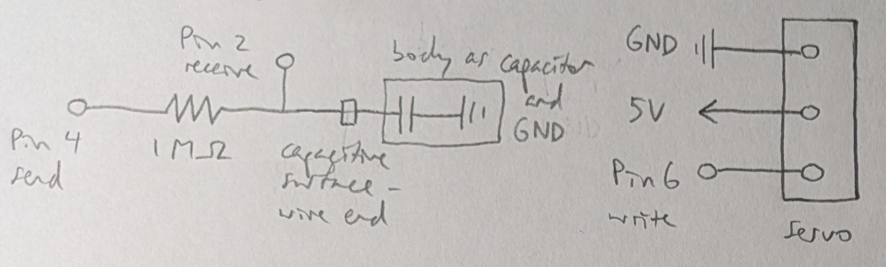
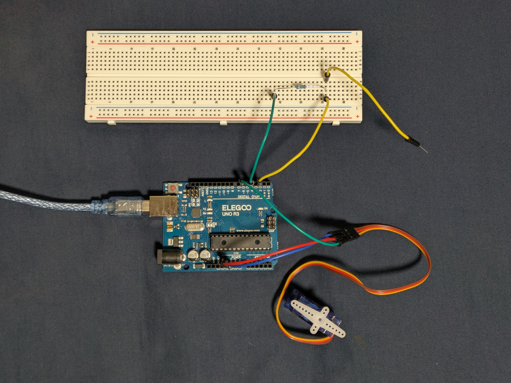
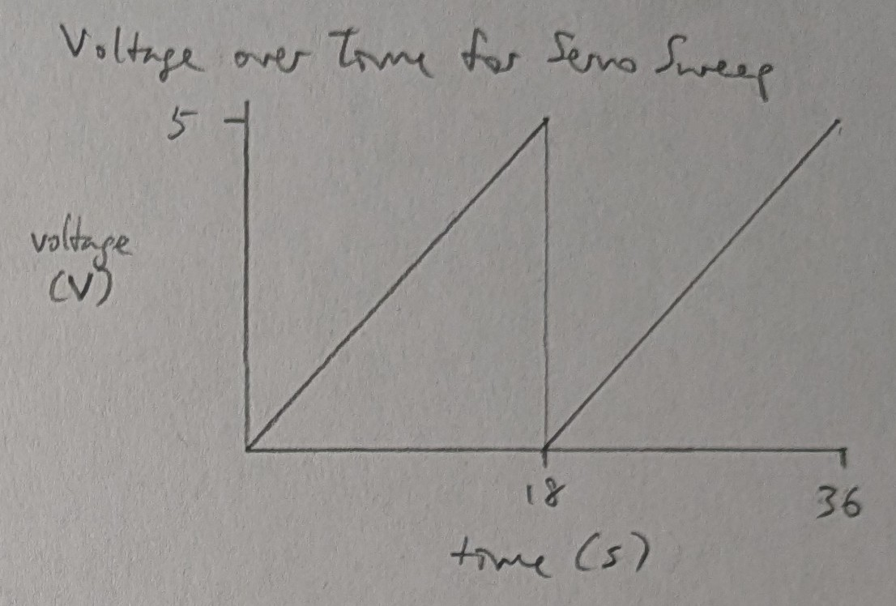

Requirements
- input and output part
- actuator output part: e.g. servo motor, LED
- part that requires a library: e.g. remote control, capacitive touch, servo motor
- >1 library; otherwise, >1 sensor input and 1+ actuator output
- if using analogRead(), code that calibrates sensor readings
Schematic
The capacitive surface for the sensor is the end of a wire.
The capacitor and ground for the sensor are the body of the person interacting with the circuit.
Resistance of 1 MOhm was chosen for the capacitive sensor based on the library guidelines for resistor choice to activate on touch contact.
Circuit
Firmware
link to code file
/*
Libraries
Built with Examples/CapacitiveSensor/CapacitiveSensorSketch and Examples/Servo/Knob
The servo motor points right when the capacitor is activated
and left when the capacitor is deactivated.
The servo motor output is attached to pin 6.
The capacitor input is attached to pin 4 for send and pin 2 for receive.
modified 26 Oct 2025
by Heidi Wang
*/
#include
#include
// 1 megaohm resistor between pins 4 & 2,
// pin 2 is sensor pin, add wire, metal capacitive surface
CapacitiveSensor cs_4_2 = CapacitiveSensor(4,2);
// initialize servo object
Servo myServo;
// the number of the write pin for the servo
const int servoPin = 6;
// the threshold for activating the capacitive sensor; change as needed
int threshold = 240;
// the setup function runs one time when the program is started
void setup()
{
// attach servo object to servo pin
myServo.attach(servoPin);
// begin serial communication at 9600 bits/s (baud)
Serial.begin(9600);
}
// the loop function loops indefinitely
void loop()
{
// read in the capacitive sensor value over 30 samples of measurement
long sensorValue = cs_4_2.capacitiveSensor(30);
// print the sensor value
Serial.println(sensorValue);
// rotate the servo depending on whether the sensor value passed the threshold
if (sensorValue > threshold) {
// rotate the servo to the right when the sensor is activated
myServo.write(180);
} else {
// rotate the servo to the left when the sensor is deactivated
myServo.write(0);
}
// delay 15ms between reads
delay(15);
}
Operation
Questions
- 
-
We can address erroneous readings by only changing the output if the reading was not an error code.
CapacitiveSensor error codes are -1 or -2, and >= 0 otherwise.
// read in the capacitive sensor value over 30 samples of measurement long sensorValue // do not change the output if the read value was an error code if (sensorValue >= 0) { // rotate the servo depending on whether the sensor value passed the threshold if {} else {} } -
If the measurement is noisy and deviates from the true measurement by +/- 10%, we can take multiple readings and average them before each adjustment to get a smoother output.
// average 5 readings of the capacitive sensor value over 30 samples of measurement long sensorValue = 0; for (int i = 0; i < 5; i++) { sensorValue = (sensorValue*i + cs_4_2.capacitiveSensor(30))/(i+1); } -
No AI use.